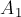
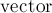
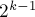
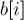
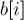

MAXimal
добавлено: 10 Jun 2008 19:04
редактировано: 9 Nov 2012 12:38
Содержание [скрыть]
Быстрое преобразование Фурье за O (N log N). Применение к умножению двух полиномов или длинных чисел
Здесь мы рассмотрим алгоритм, который позволяет перемножить два полинома длиной  за время
за время  , что значительно лучше времени
, что значительно лучше времени  , достигаемого тривиальным алгоритмом умножения. Очевидно, что умножение двух длинных чисел можно свести к умножению полиномов, поэтому два длинных числа также можно перемножить за время .
, достигаемого тривиальным алгоритмом умножения. Очевидно, что умножение двух длинных чисел можно свести к умножению полиномов, поэтому два длинных числа также можно перемножить за время .
Изобретение Быстрого преобразования Фурье приписывается Кули (Coolet) и Таки (Tukey) — 1965 г. На самом деле БПФ неоднократно изобреталось до этого, но важность его в полной мере не осознавалась до появления современных компьютеров. Некоторые исследователи приписывают открытие БПФ Рунге (Runge) и Кёнигу (Konig) в 1924 г. Наконец, открытие этого метода приписывается ещё Гауссу (Gauss) в 1805 г.
Дискретное преобразование Фурье (ДПФ)
Пусть имеется многочлен -ой степени:
Не теряя общности, можно считать, что является степенью 2. Если в действительности не является степенью 2, то мы просто добавим недостающие коэффициенты, положив их равными нулю.
Из теории функций комплексного переменного известно, что комплексных корней -ой степени из единицы существует ровно . Обозначим эти корни через , тогда известно, что . Кроме того, один из этих корней (называемый главным значением корня -ой степени из единицы) таков, что все остальные корни являются его степенями: .
Тогда дискретным преобразованием Фурье (ДПФ) (discrete Fourier transform, DFT) многочлена (или, что то же самое, ДПФ вектора его коэффициентов  ) называются значения этого многочлена в точках , т.е. это вектор:
) называются значения этого многочлена в точках , т.е. это вектор:
Аналогично определяется и обратное дискретное преобразование Фурье (InverseDFT). Обратное ДПФ для вектора значений многочлена  — это вектор коэффициентов многочлена
— это вектор коэффициентов многочлена  :
:
Таким образом, если прямое ДПФ переходит от коэффициентов многочлена к его значениям в комплексных корнях -ой степени из единицы, то обратное ДПФ — наоборот, по значениям многочлена восстанавливает коэффициенты многочлена.
Применение ДПФ для быстрого умножения полиномов
Пусть даны два многочлена  и
и  . Посчитаем ДПФ для каждого из них: и — это два вектора-значения многочленов.
. Посчитаем ДПФ для каждого из них: и — это два вектора-значения многочленов.
Теперь, что происходит при умножении многочленов? Очевидно, в каждой точке их значения просто перемножаются, т.е.
Но это означает, что если мы перемножим вектора и , просто умножив каждый элемент одного вектора на соответствующий ему элемент другого вектора, то мы получим не что иное, как ДПФ от многочлена :
Наконец, применяя обратное ДПФ, получаем:
где, повторимся, справа под произведением двух ДПФ понимается попарные произведения элементов векторов. Такое произведение, очевидно, требует для вычисления только  операций. Таким образом, если мы научимся вычислять ДПФ и обратное ДПФ за время , то и произведение двух полиномов (а, следовательно, и двух длинных чисел) мы сможем найти за ту же асимптотику.
операций. Таким образом, если мы научимся вычислять ДПФ и обратное ДПФ за время , то и произведение двух полиномов (а, следовательно, и двух длинных чисел) мы сможем найти за ту же асимптотику.
Следует заметить, что, во-первых, два многочлена следует привести к одной степени (просто дополнив коэффициенты одного из них нулями). Во-вторых, в результате произведения двух многочленов степени получается многочлен степени  , поэтому, чтобы результат получился корректным, предварительно нужно удвоить степени каждого многочлена (опять же, дополнив их нулевыми коэффициентами).
, поэтому, чтобы результат получился корректным, предварительно нужно удвоить степени каждого многочлена (опять же, дополнив их нулевыми коэффициентами).
Быстрое преобразование Фурье
Быстрое преобразование Фурье (fast Fourier transform) — это метод, позволяющий вычислять ДПФ за время . Этот метод основывается на свойствах комплексных корней из единицы (а именно, на том, что степени одних корней дают другие корни).
Основная идея БПФ заключается в разделении вектора коэффициентов на два вектора, рекурсивном вычислении ДПФ для них, и объединении результатов в одно БПФ.
Итак, пусть имеется многочлен степени , где — степень двойки, и  :
:
Разделим его на два многочлена, один — с чётными, а другой — с нечётными коэффициентами:
Нетрудно убедиться, что:
Многочлены и  имеют вдвое меньшую степень, чем многочлен . Если мы сможем за линейное время по вычисленным и  вычислить , то мы и получим искомый алгоритм быстрого преобразования Фурье (т.к. это стандартная схема алгоритма "разделяй и властвуй", и для неё известна асимптотическая оценка ).
вычислить , то мы и получим искомый алгоритм быстрого преобразования Фурье (т.к. это стандартная схема алгоритма "разделяй и властвуй", и для неё известна асимптотическая оценка ).
Итак, пусть мы имеем вычисленные вектора и . Найдём выражения для  .
.
Во-первых, вспоминая (1), мы сразу получаем значения для первой половины коэффициентов:
Для второй половины коэффициентов после преобразований также получаем простую формулу:
(Здесь мы воспользовались (1), а также тождествами , .)
Итак, в результате мы получили формулы для вычисления всего вектора :
(эти формулы, т.е. две формулы вида  и , иногда называют "преобразование бабочки" ("butterfly operation"))
и , иногда называют "преобразование бабочки" ("butterfly operation"))
Тем самым, мы окончательно построили алгоритм БПФ.
Обратное БПФ
Итак, пусть дан вектор — значения многочлена степени в точках . Требуется восстановить коэффициенты многочлена. Эта известная задача называется интерполяцией, для этой задачи есть и общие алгоритмы решения, однако в данном случае будет получен очень простой алгоритм (простой тем, что он практически не отличается от прямого БПФ).
ДПФ мы можем записать, согласно его определению, в матричном виде:
Тогда вектор можно найти, умножив вектор на обратную матрицу к матрице, стоящей слева (которая, кстати, называется матрицей Вандермонда):
Непосредственной проверкой можно убедиться в том, что эта обратная матрица такова:
Таким образом, получаем формулу:
Сравнивая её с формулой для  :
:
мы замечаем, что эти две задачи почти ничем не отличаются, поэтому коэффициенты можно находить таким же алгоритмом "разделяй и властвуй", как и прямое БПФ, только вместо везде надо использовать , а каждый элемент результата надо разделить на .
Таким образом, вычисление обратного ДПФ почти не отличается от вычисления прямого ДПФ, и его также можно выполнять за время .
Реализация
Рассмотрим простую рекурсивную реализацию БПФ и обратного БПФ, реализуем их в виде одной функции, поскольку различия между прямым и обратным БПФ минимальны. Для хранения комплексных чисел воспользуемся стандартным в C++ STL типом complex (определённым в заголовочном файле <complex>).
typedef complex<double> base; void fft (vector<base> & a, bool invert) { int n = (int) a.size(); if (n == 1) return; vector<base> a0 (n/2), a1 (n/2); for (int i=0, j=0; i<n; i+=2, ++j) { a0[j] = a[i]; a1[j] = a[i+1]; } fft (a0, invert); fft (a1, invert); double ang = 2*PI/n * (invert ? -1 : 1); base w (1), wn (cos(ang), sin(ang)); for (int i=0; i<n/2; ++i) { a[i] = a0[i] + w * a1[i]; a[i+n/2] = a0[i] - w * a1[i]; if (invert) a[i] /= 2, a[i+n/2] /= 2; w *= wn; } }
В аргумент функции передаётся входной вектор коэффициентов, в нём же и будет содержаться результат. Аргумент показывает, прямое или обратное ДПФ следует вычислить. Внутри функции сначала проверяется, что если длина вектора равна единице, то ничего делать не надо - он сам и является ответом. Иначе вектор разделяется на два вектора и , для которых рекурсивно вычисляется ДПФ. Затем вычисляется величина  , и заводится переменная
, и заводится переменная  , содержащая текущую степень . Затем вычисляются элементы результирующего ДПФ по вышеописанным формулам.
, содержащая текущую степень . Затем вычисляются элементы результирующего ДПФ по вышеописанным формулам.
Если указан флаг , то заменяется на , а каждый элемент результата делится на 2 (учитывая, что эти деления на 2 произойдут в каждом уровне рекурсии, то в итоге как раз получится, что все элементы поделятся на ).
Тогда функция для перемножения двух многочленов будет выглядеть следующим образом:
void multiply (const vector<int> & a, const vector<int> & b, vector<int> & res) { vector<base> fa (a.begin(), a.end()), fb (b.begin(), b.end()); size_t n = 1; while (n < max (a.size(), b.size())) n <<= 1; n <<= 1; fa.resize (n), fb.resize (n); fft (fa, false), fft (fb, false); for (size_t i=0; i<n; ++i) fa[i] *= fb[i]; fft (fa, true); res.resize (n); for (size_t i=0; i<n; ++i) res[i] = int (fa[i].real() + 0.5); }
Эта функция работает с многочленами с целочисленными коэффициентами (хотя, понятно, теоретически ничто не мешает ей работать и с дробными коэффициентами). Однако здесь проявляется проблема большой погрешности при вычислении ДПФ: погрешность может оказаться значительной, поэтому округлять числа лучше самым надёжным способом — прибавлением 0.5 и последующим округлением вниз (внимание: это будет работать неправильно для отрицательных чисел, если таковые могут появиться в вашем применении).
Наконец, функция для перемножения двух длинных чисел практически ничем не отличается от функции для перемножения многочленов. Единственная особенность — что после выполнения умножения чисел как многочлены их следует нормализовать, т.е. выполнить все переносы разрядов:
int carry = 0; for (size_t i=0; i<n; ++i) { res[i] += carry; carry = res[i] / 10; res[i] %= 10; }
(Поскольку длина произведения двух чисел никогда не превзойдёт суммарной длины чисел, то размера вектора хватит, чтобы выполнить все переносы.)
Улучшенная реализация: вычисления "на месте" без дополнительной памяти
Для увеличения эффективности откажемся от рекурсии в явном виде. В приведённой выше рекурсивной реализации мы явно разделяли вектор на два вектора — элементы на чётных позициях отнесли к одному временно созданному вектору, а на нечётных — к другому. Однако, если бы мы переупорядочили элементы определённым образом, то необходимость в создании временных векторов тогда бы отпала (т.е. все вычисления мы могли бы производить "на месте", прямо в самом векторе  ).
).
Заметим, что на первом уровне рекурсии элементы, младшие (первые) биты позиций которых равны нулю, относятся к вектору , а младшие биты позиций которых равны единице — к вектору . На втором уровне рекурсии выполняется то же самое, но уже для вторых битов, и т.д. Поэтому если мы в позиции  каждого элемента
каждого элемента ![a[i]](../tex2png/cache/3530c8c1281c8ee618b020a2333a22ca.png) инвертируем порядок битов, и переупорядочим элементы массива в соответствии с новыми индексами, то мы и получим искомый порядок (он называется поразрядно обратной перестановкой (bit-reversal permutation)).
инвертируем порядок битов, и переупорядочим элементы массива в соответствии с новыми индексами, то мы и получим искомый порядок (он называется поразрядно обратной перестановкой (bit-reversal permutation)).
Например, для этот порядок имеет вид:
Действительно, на первом уровне рекурсии (окружено фигурными скобками) обычного рекурсивного алгоритма происходит разделение вектора на две части: и . Как мы видим, в поразрядно обратной перестановке этому соответствует просто разделение вектора на две половинки: первые  элементов, и последние элементов. Затем происходит рекурсивный вызов от каждой половинки; пусть результирующее ДПФ от каждой из них было возвращено на месте самих элементов (т.е. в первой и второй половинах вектора соответственно):
элементов, и последние элементов. Затем происходит рекурсивный вызов от каждой половинки; пусть результирующее ДПФ от каждой из них было возвращено на месте самих элементов (т.е. в первой и второй половинах вектора соответственно):
Теперь нам надо выполнить объединение двух ДПФ в одно для всего вектора. Но элементы встали так удачно, что и объединение можно выполнить прямо в этом массиве. Действительно, возьмём элементы и , применим к ним преобразование бабочки, и результат поставим на их месте — и это место и окажется тем самым, которое и должно было получиться:
Аналогично, применяем преобразование бабочки к и и результат ставим на их место, и т.д. В итоге получаем:
Т.е. мы получили именно искомое ДПФ от вектора .
Мы описали процесс вычисления ДПФ на первом уровне рекурсии, но понятно, что те же самые рассуждения верны и для всех остальных уровней рекурсии. Таким образом, после применения поразрядно обратной перестановки вычислять ДПФ можно на месте, без привлечения дополнительных массивов.
Но теперь можно избавиться и от рекурсии в явном виде. Итак, мы применили поразрядно обратную перестановку элементов. Теперь выполним всю работу, выполняемую нижним уровнем рекурсии, т.е. вектор разделим на пары элементов, для каждого применим преобразование бабочки, в результате в векторе будут находиться результаты работы нижнего уровня рекурсии. На следующем шаге разделим вектор на четвёрки элементов, к каждой применим преобразование бабочки, в результате получим ДПФ для каждой четвёрки. И так далее, наконец, на последнем шаге мы, получив результаты ДПФ для двух половинок вектора , применим к ним преобразование бабочки и получим ДПФ для всего вектора .
Итак, реализация:
typedef complex<double> base; int rev (int num, int lg_n) { int res = 0; for (int i=0; i<lg_n; ++i) if (num & (1<<i)) res |= 1<<(lg_n-1-i); return res; } void fft (vector<base> & a, bool invert) { int n = (int) a.size(); int lg_n = 0; while ((1 << lg_n) < n) ++lg_n; for (int i=0; i<n; ++i) if (i < rev(i,lg_n)) swap (a[i], a[rev(i,lg_n)]); for (int len=2; len<=n; len<<=1) { double ang = 2*PI/len * (invert ? -1 : 1); base wlen (cos(ang), sin(ang)); for (int i=0; i<n; i+=len) { base w (1); for (int j=0; j<len/2; ++j) { base u = a[i+j], v = a[i+j+len/2] * w; a[i+j] = u + v; a[i+j+len/2] = u - v; w *= wlen; } } } if (invert) for (int i=0; i<n; ++i) a[i] /= n; }
Вначале к вектору применяется поразрядно обратная перестановка, для чего вычисляется количество значащих бит () в числе , и для каждой позиции находится соответствующая ей позиция, битовая запись которой есть битовая запись числа , записанная в обратном порядке. Если получившаяся в результате позиция оказалась больше , то элементы в этих двух позициях надо обменять (если не это условие, то каждая пара обменяется дважды, и в итоге ничего не произойдёт).
Затем выполняется стадий алгоритма, на  -ой из которых () вычисляются ДПФ для блоков длины
-ой из которых () вычисляются ДПФ для блоков длины  . Для всех этих блоков будет одно и то же значение первообразного корня , которое и запоминается в переменной . Цикл по итерируется по блокам, а вложенный в него цикл по
. Для всех этих блоков будет одно и то же значение первообразного корня , которое и запоминается в переменной . Цикл по итерируется по блокам, а вложенный в него цикл по  применяет преобразование бабочки ко всем элементам блока.
применяет преобразование бабочки ко всем элементам блока.
Можно выполнить дальнейшую оптимизацию реверса битов. В предыдущей реализации мы явно проходили по всем битам числа, попутно строя поразрядно инвертированное число. Однако реверс битов можно выполнять и по-другому.
Например, пусть — уже подсчитанное число, равное обратной перестановке битов числа . Тогда, при переходе к следующему числу  мы должны и к числу прибавить единицу, но прибавить её в такой "инвертированной" системе счисления. В обычной двоичной системе счисления прибавить единицу — значит удалить все единицы, стоящие на конце числа (т.е. группу младших единиц), а перед ними поставить единицу. Соответственно, в "инвертированной" системе мы должны идти по битам числа, начиная со старших, и пока там стоят единицы, удалять их и переходить к следующему биту; когда же встретится первый нулевой бит, поставить в него единицу и остановиться.
мы должны и к числу прибавить единицу, но прибавить её в такой "инвертированной" системе счисления. В обычной двоичной системе счисления прибавить единицу — значит удалить все единицы, стоящие на конце числа (т.е. группу младших единиц), а перед ними поставить единицу. Соответственно, в "инвертированной" системе мы должны идти по битам числа, начиная со старших, и пока там стоят единицы, удалять их и переходить к следующему биту; когда же встретится первый нулевой бит, поставить в него единицу и остановиться.
Итак, получаем такую реализацию:
typedef complex<double> base; void fft (vector<base> & a, bool invert) { int n = (int) a.size(); for (int i=1, j=0; i<n; ++i) { int bit = n >> 1; for (; j>=bit; bit>>=1) j -= bit; j += bit; if (i < j) swap (a[i], a[j]); } for (int len=2; len<=n; len<<=1) { double ang = 2*PI/len * (invert ? -1 : 1); base wlen (cos(ang), sin(ang)); for (int i=0; i<n; i+=len) { base w (1); for (int j=0; j<len/2; ++j) { base u = a[i+j], v = a[i+j+len/2] * w; a[i+j] = u + v; a[i+j+len/2] = u - v; w *= wlen; } } } if (invert) for (int i=0; i<n; ++i) a[i] /= n; }
Дополнительные оптимизации
Приведём также список других оптимизаций, которые в совокупности позволяют заметно ускорить приведённую выше "улучшенную" реализацию:
- Предпосчитать реверс битов для всех чисел в некоторой глобальной таблице. Особенно легко это, когда размер при всех вызовах одинаков.
Эта оптимизация становится заметной при большом количестве вызовов . Впрочем, эффект от неё можно заметить даже при трёх вызовах (три вызова — наиболее распространённая ситуация, т.е. когда требуется один раз перемножить два многочлена).
- Отказаться от использования  (перейти на обычные массивы).
Эффект от этого зависит от конкретного компилятора, однако обычно он присутствует и составляет примерно 10%-20%.
- Предпосчитать все степени числа . В самом деле, в этом цикле алгоритма раз за разом производится проход по всем степеням числа от
 до :
до :for (int i=0; i<n; i+=len) { base w (1); for (int j=0; j<len/2; ++j) { [...] w *= wlen; } }
Соответственно, перед этим циклом мы можем предпосчитать в некотором массиве все требуемые степени, и избавиться тем самым от лишних умножений во вложенном цикле.
Ориентировочное ускорение — 5-10%.
- Избавиться от обращений к массивам по индексам, использовать вместо этого указатели на текущие элементы массивов, продвигая их на 1 вправо на каждой итерации.
На первый взгляд, оптимизирующие компиляторы должны быть способны самостоятельно справиться с этим, однако на практике оказывается, что замена обращений к массивам и на указатели ускоряет программу в распространённых компиляторах. Выигрыш составляет 5-10%.
- Отказаться от стандартного типа комплексных чисел , переписав его на собственную реализацию.
Опять же, это может показаться удивительным, но даже в современных компиляторах выигрыш от такого переписывания может составлять до нескольких десятков процентов! Это косвенно подтверждает расхожее утверждение, что компиляторы хуже справляются с шаблонными типами данных, оптимизируя работу с ними гораздо хуже, чем с не-шаблонными типами.
- Другой полезной оптимизацией является отсечение по длине: когда длина рабочего блока становится маленькой (скажем, 4), вычислять ДПФ для него "вручную". Если расписать эти случаи в виде явных формул при длине, равной , то значения синусов-косинусов примут целочисленные значения, за счёт чего можно получить прирост скорости ещё на несколько десятков процентов.
Приведём здесь реализацию с описанными улучшениями (за исключением двух последних пунктов, которые приводят к чрезмерному разрастанию кода):
int rev[MAXN]; base wlen_pw[MAXN]; void fft (base a[], int n, bool invert) { for (int i=0; i<n; ++i) if (i < rev[i]) swap (a[i], a[rev[i]]); for (int len=2; len<=n; len<<=1) { double ang = 2*PI/len * (invert?-1:+1); int len2 = len>>1; base wlen (cos(ang), sin(ang)); wlen_pw[0] = base (1, 0); for (int i=1; i<len2; ++i) wlen_pw[i] = wlen_pw[i-1] * wlen; for (int i=0; i<n; i+=len) { base t, *pu = a+i, *pv = a+i+len2, *pu_end = a+i+len2, *pw = wlen_pw; for (; pu!=pu_end; ++pu, ++pv, ++pw) { t = *pv * *pw; *pv = *pu - t; *pu += t; } } } if (invert) for (int i=0; i<n; ++i) a[i] /= n; } void calc_rev (int n, int log_n) { for (int i=0; i<n; ++i) { rev[i] = 0; for (int j=0; j<log_n; ++j) if (i & (1<<j)) rev[i] |= 1<<(log_n-1-j); } }
На распространённых компиляторах данная реализация быстрее предыдущего "улучшенного" варианта в 2-3 раза.
Дискретное преобразование Фурье в модульной арифметике
В основе дискретного преобразования Фурье лежат комплексные числа, корни -ой степени из единицы. Для эффективного его вычисления использовались такие особенности корней, как существование различных корней, образующих группу (т.е. степень одного корня — всегда другой корень; среди них есть один элемент — генератор группы, называемый примитивным корнем).
Но то же самое верно и в отношении корней -ой степени из единицы в модульной арифметике. Точнее, не для любого модуля  найдётся различных корней из единицы, однако такие модули всё же существуют. По-прежнему нам важно найти среди них примитивный корень, т.е.:
найдётся различных корней из единицы, однако такие модули всё же существуют. По-прежнему нам важно найти среди них примитивный корень, т.е.:
Все остальные  корней -ой степени из единицы по модулю можно получить как степени примитивного корня (как и в комплексном случае).
корней -ой степени из единицы по модулю можно получить как степени примитивного корня (как и в комплексном случае).
Для применения в алгоритме Быстрого преобразования Фурье нам было нужно, чтобы примивный корень существовал для некоторого , являвшегося степенью двойки, а также всех меньших степеней. И если в комплексном случае примитивный корень существовал для любого , то в случае модульной арифметики это, вообще говоря, не так. Однако, заметим, что если  , т.е. -ая степень двойки, то по модулю имеем:
, т.е. -ая степень двойки, то по модулю имеем:
Таким образом, если — примитивный корень -ой степени из единицы, то — примитивный корень -ой степени из единицы. Следовательно, для всех степеней двойки, меньших , примитивные корни нужной степени также существуют, и могут быть вычислены как соответствующие степени .
Последний штрих — для обратного ДПФ мы использовали вместо обратный ему элемент: . Но по простому модулю обратный элемент также всегда найдётся.
Таким образом, все нужные нам свойства соблюдаются и в случае модульной арифметики, при условии, что мы выбрали некоторый достаточно большой модуль и нашли в нём примитивный корень -ой степени из единицы.
Например, можно взять такие значения: модуль , . Если этого модуля будет недостаточно, для нахождения другой пары можно воспользоваться фактом, что для модулей вида (но по-прежнему обязательно простых) всегда найдётся примитивный корень степени из единицы.
const int mod = 7340033; const int root = 5; const int root_1 = 4404020; const int root_pw = 1<<20; void fft (vector<int> & a, bool invert) { int n = (int) a.size(); for (int i=1, j=0; i<n; ++i) { int bit = n >> 1; for (; j>=bit; bit>>=1) j -= bit; j += bit; if (i < j) swap (a[i], a[j]); } for (int len=2; len<=n; len<<=1) { int wlen = invert ? root_1 : root; for (int i=len; i<root_pw; i<<=1) wlen = int (wlen * 1ll * wlen % mod); for (int i=0; i<n; i+=len) { int w = 1; for (int j=0; j<len/2; ++j) { int u = a[i+j], v = int (a[i+j+len/2] * 1ll * w % mod); a[i+j] = u+v < mod ? u+v : u+v-mod; a[i+j+len/2] = u-v >= 0 ? u-v : u-v+mod; w = int (w * 1ll * wlen % mod); } } } if (invert) { int nrev = reverse (n, mod); for (int i=0; i<n; ++i) a[i] = int (a[i] * 1ll * nrev % mod); } }
Здесь функция  находит обратный к элемент по модулю (см. Обратный элемент в поле по модулю). Константы ,
находит обратный к элемент по модулю (см. Обратный элемент в поле по модулю). Константы ,  определяют модуль и примитивный корень, а — обратный к элемент по модулю .
определяют модуль и примитивный корень, а — обратный к элемент по модулю .
Как показывает практика, реализация целочисленного ДПФ работает даже медленней реализации с комплексными числами (из-за огромного количества операций взятия по модулю), однако она имеет такие преимущества, как меньшее использование памяти и отсутствие погрешностей округления.
Некоторые применения
Помимо непосредственного применения для перемножения многочленов или длинных чисел, опишем здесь некоторые другие приложения дискретного преобразования Фурье.
Всевозможные суммы
Задача: даны два массива ![a[]](../tex2png/cache/0f0e294f3fa9d716ea988ff8370f698d.png) и . Требуется найти всевозможные числа вида , и для каждого такого числа вывести количество способов получить его.
и . Требуется найти всевозможные числа вида , и для каждого такого числа вывести количество способов получить его.
Например, для и получаем: число 3 можно получить 1 способом, 4 — также одним, 5 — 2, 6 — 1, 7 — 1.
Построим по массивам и  два многочлена и . В качестве степеней в многочлене будут выступать сами числа, т.е. значения (), а в качестве коэффициентов при них — сколько раз это число встречается в массиве ().
два многочлена и . В качестве степеней в многочлене будут выступать сами числа, т.е. значения (), а в качестве коэффициентов при них — сколько раз это число встречается в массиве ().
Тогда, перемножив эти два многочлена за , мы получим многочлен  , где в качестве степеней будут всевозможные числа вида , а коэффициенты при них будут как раз искомыми количествами
, где в качестве степеней будут всевозможные числа вида , а коэффициенты при них будут как раз искомыми количествами
Всевозможные скалярные произведения
Даны два массива и одной длины . Требуется вывести значения каждого скалярного произведения вектора на очередной циклический сдвиг вектора .
Инвертируем массив и припишем к нему в конец нулей, а к массиву — просто припишем самого себя. Затем перемножим их как многочлены. Теперь рассмотрим коэффициенты произведения (как всегда, все индексы в 0-индексации). Имеем:
Поскольку все элементы , то мы получаем:
Нетрудно увидеть в этой сумме, что это именно скалярное произведение вектора на -ый циклический сдвиг. Таким образом, эти коэффициенты (начиная с -го и закачивая -ым) — и есть ответ на задачу.
Решение получилось с асимптотикой  .
.
Две полоски
Даны две полоски, заданные как два булевских (т.е. числовых со значениями 0 или 1) массива и . Требуется найти все такие позиции на первой полоске, что если приложить, начиная с этой позиции, вторую полоску, ни в каком месте не получится  сразу на обеих полосках. Эту задачу можно переформулировать таким образом: дана карта полоски, в виде 0/1 — можно вставать в эту клетку или нет, и дана некоторая фигурка в виде шаблона (в виде массива, в котором 0 — нет клетки, 1 — есть), требуется найти все позиции в полоске, к которым можно приложить фигурку.
сразу на обеих полосках. Эту задачу можно переформулировать таким образом: дана карта полоски, в виде 0/1 — можно вставать в эту клетку или нет, и дана некоторая фигурка в виде шаблона (в виде массива, в котором 0 — нет клетки, 1 — есть), требуется найти все позиции в полоске, к которым можно приложить фигурку.
Эта задача фактически ничем не отличается от предыдущей задачи — задачи о скалярном произведении. Действительно, скалярное произведение двух 0/1 массивов — это количество элементов, в которых одновременно оказались единицы. Наша задача в том, чтобы найти все циклические сдвиги второй полоски так, чтобы не нашлось ни одного элемента, в котором бы в обеих полосках оказались единицы. Т.е. мы должны найти все циклические сдвиги второго массива, при которых скалярное произведение равно нулю.
Таким образом, эту задачу мы решили за .